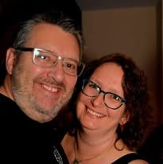
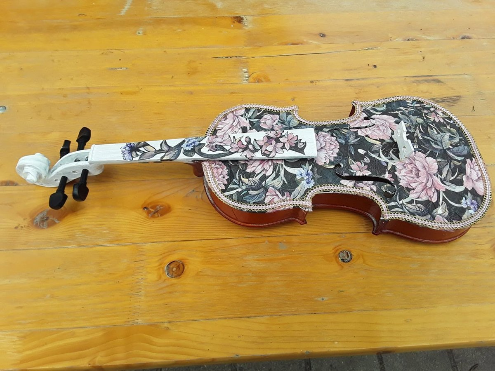
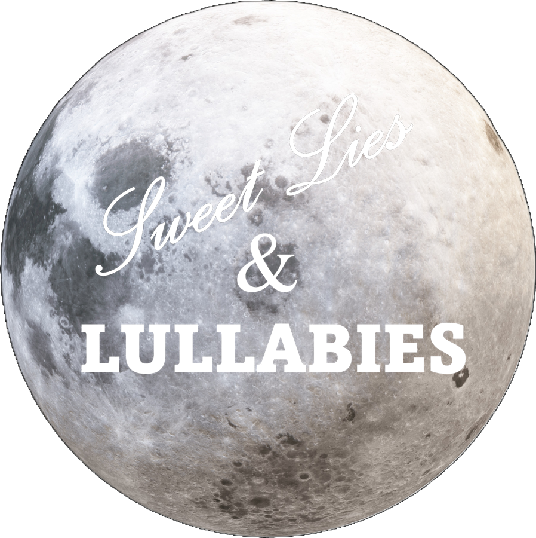
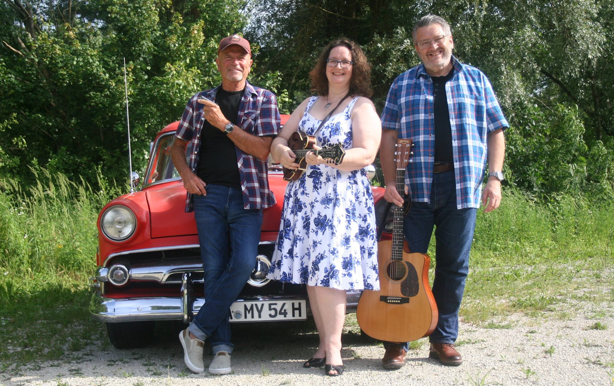

Quilter, crocheter, weaver, occasional spinner, and one half of the harmonies in Sweet Lies and Lullabies. Most of what I make starts the same way: a good pattern, a bit of patience, and someone nearby playing a banjo.

Dana & Ken
I like the slow arithmetic of it: cutting fabric into small honest shapes and sewing them back into something bigger than they were. Most projects are pieced by machine and finished by hand, which means there's always one quilt on the go and one on the frame.
The most portable of the lot - a hook, a ball of yarn, and a granny square grows anywhere: festival fields included. Replace this paragraph with your own take on what draws you to it.
Slower again, and unforgiving of mistakes - every thread's committed the moment it's warped onto the loom. Replace this paragraph with the story behind your loom, or your favourite finished piece.
Where the yarn starts, before any of the above. Replace this paragraph with what you spin, and what it tends to become.

Not every project fits neatly into quilting, crochet or weaving - this decoupaged violin is proof. Replace this with the story of how it came about.


Where most of this actually gets rehearsed - built and decorated by hand, right down to the paintwork.
Double bass, mandolin, guitar and blues harp carry the sound - American roots music, played and sung the way it's meant to be. Dana's own songs sit alongside folk, bluegrass, old-time and country numbers, with harmonies and acoustic instruments telling stories about love, betrayal, life and death.
Alma's joining on voice and double bass, in as soon as there are decent photos to use.
Drop in a Bandcamp, Spotify or YouTube embed here once one's live.
Add dates as they're booked, e.g. "12 Sept - The Fiddler's Rest, Edinburgh".
Featured in the Mittelbayerische's write-up of Langquaid's Offene Bühne (15 January 2026), which singled the trio out among the evening's highlights for their close harmonies, original songs and warm country-folk sound.
I came to bluegrass sideways, through a fiddle tune I couldn't get out of my head and a festival field I didn't want to leave. Every summer now includes a stretch of proper picking, borrowed chairs, and songs that are older than anyone playing them.
This is the spot to add your own festival photos, favourite bands you've seen, or a short account of the trips that got you here.